Inspiration
When an idea, an emotion or even a fragment of a script suddenly comes to mind, I start exploring it. I look for the format that best fits the idea, whether it's film, photography or documentary.
CREATIVE DIRECTOR & FILMMAKER
Cinema, design,
documentary,
photography...
JIMÉNEZ
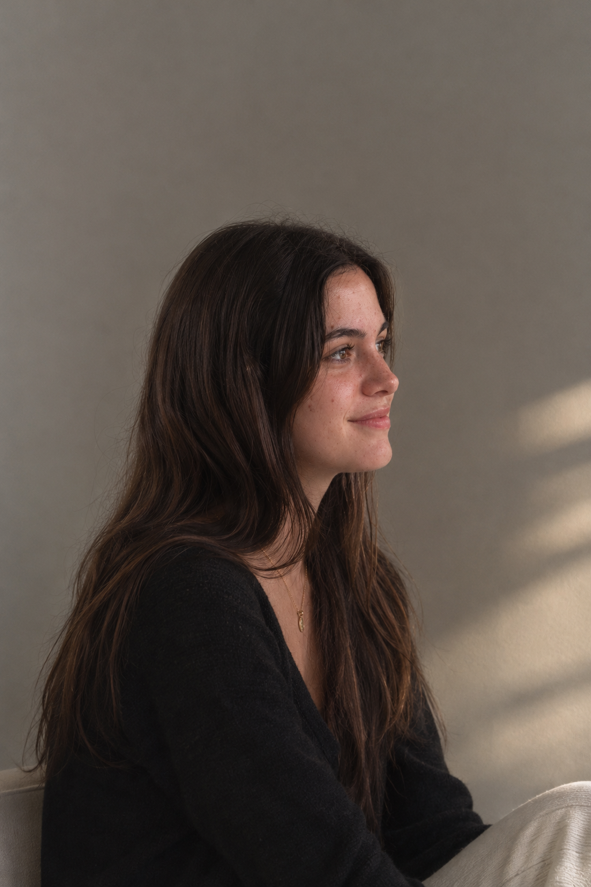
ABOUT
“Create stories that get under your skin.”
Hi, I'm Claudia Jiménez, an audiovisual creator born in Girona, Spain.
I've always loved reading. For me, words were never just words on a page; they were images, places, characters and entire worlds playing in my head, almost like a film. Little by little, I started turning those imagined scenes into real projects, finding in cinema and photography a way to give shape to the stories I wanted to tell.
I'm drawn to stories that make you feel something, that stay with you long after they end. The ones that get under your skin, make you see things differently or remind you of something you can't quite put into words.
Whenever I start imagining a project or deciding how I want it to look and what feelings I want to convey, I like to put my headphones on and let the music guide my thoughts. Sometimes, a song helps me picture a scene, find the right atmosphere or connect ideas that didn't seem to fit together before. I'm someone who finds inspiration in the little things: a line from a book, a conversation I keep thinking about or a song that feels different depending on the day or the season. I often get lost in my own thoughts, imagining what everyday moments would look like if they were part of a film.
And somewhere between creating, imagining and editing, there's almost always a cup of coffee nearby.
MY ARTISTIC OBJECTIVE
My work is about exploring emotions, capturing moments and turning ideas into visual stories. Through film, photography and documentary, I want to create images that mean something beyond what we see.
HOW I WORK
Every project begins with a feeling, a question or a small detail I can't stop thinking about. I collect references, let music shape the atmosphere and build a visual language that feels honest to the story.
When an idea, an emotion or even a fragment of a script suddenly comes to mind, I start exploring it. I look for the format that best fits the idea, whether it's film, photography or documentary.
I put on some music and let my imagination flow. I experiment with different variables, visual styles and possible directions, exploring how to express the same idea in different ways until I find the one that best conveys what I want to communicate.
Once I find the direction that connects with the idea, I bring all the pieces together. Through images, rhythm and editing, I shape the final story, transforming an initial feeling into something others can see, feel and connect with.
SELECTED PROJECTS
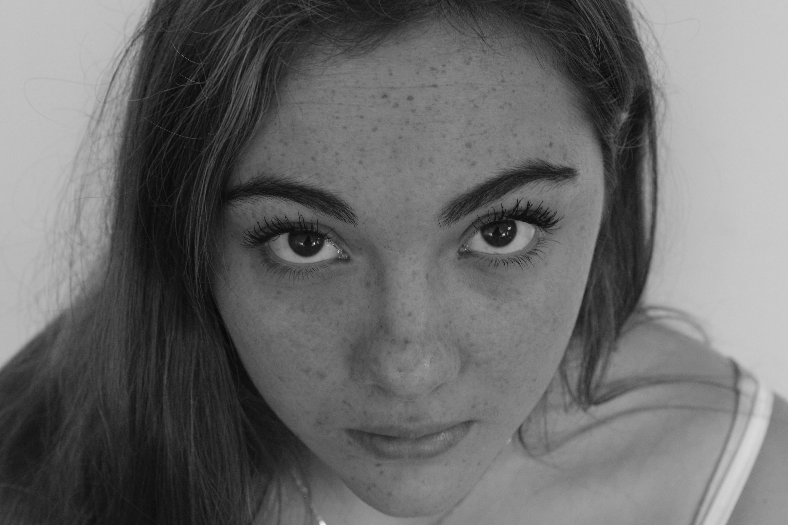
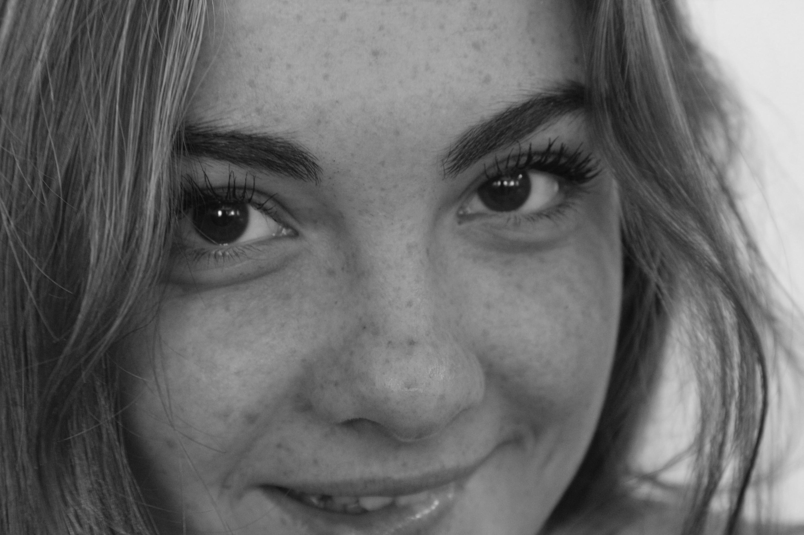
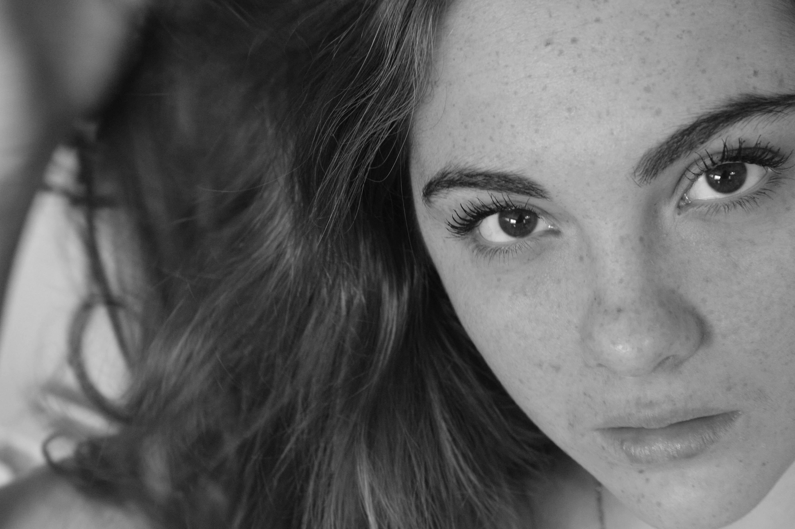
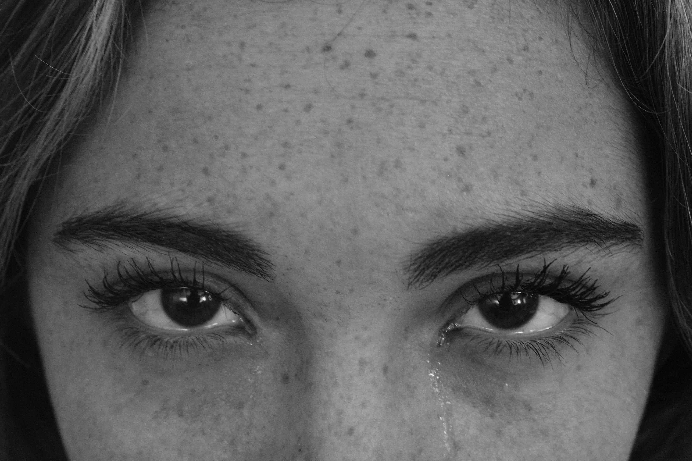
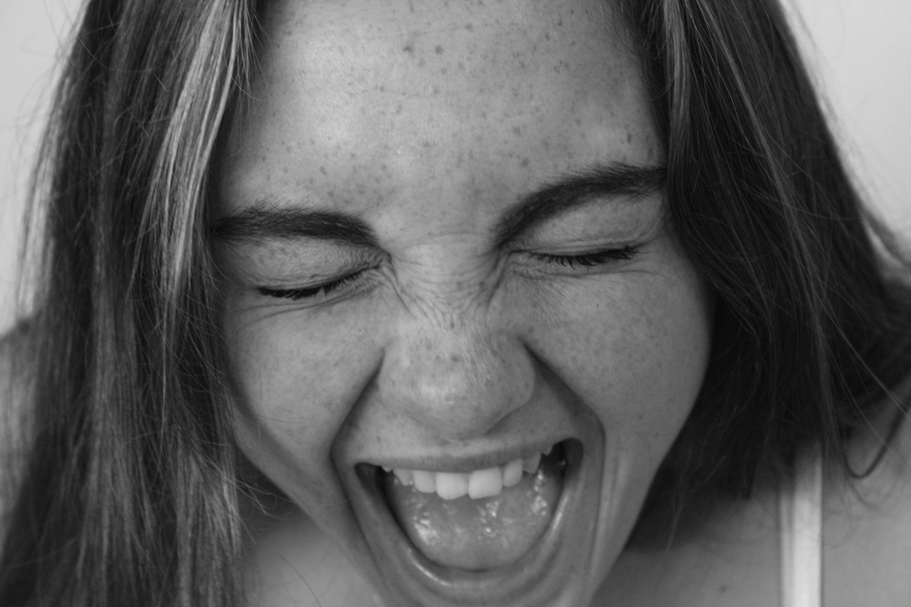
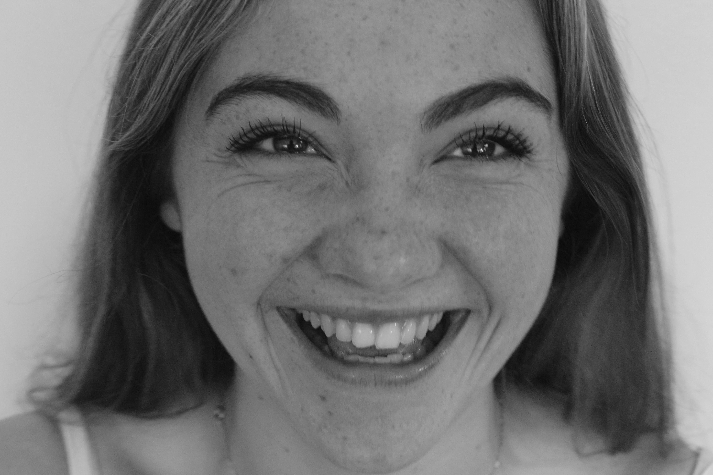
PHOTOGRAPHY – PHOTO SESSION
A session focused on the significance and the revelation of feeling inherent in a gesture.
Download project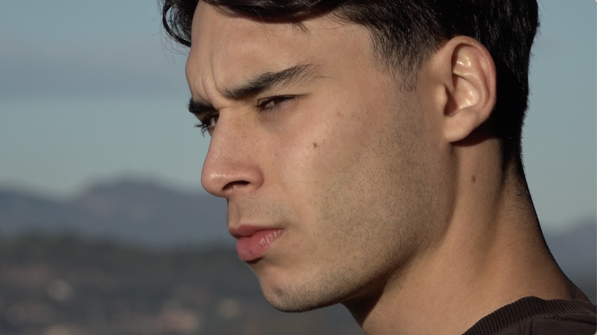
DOCUMENTARY
A documentary that explores the relationship and the dependency between two siblings.
Download project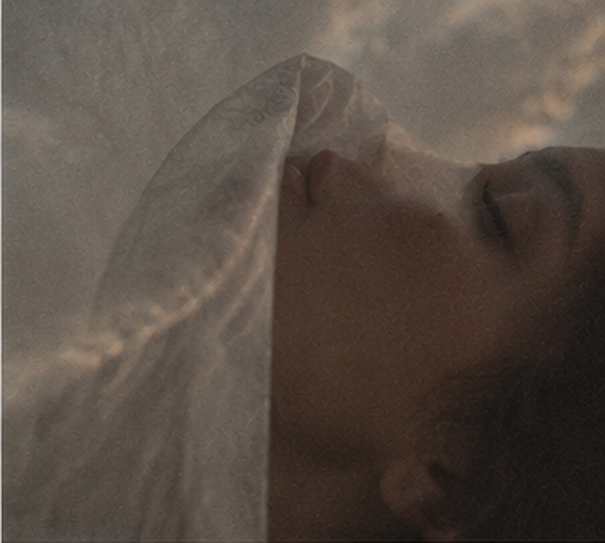
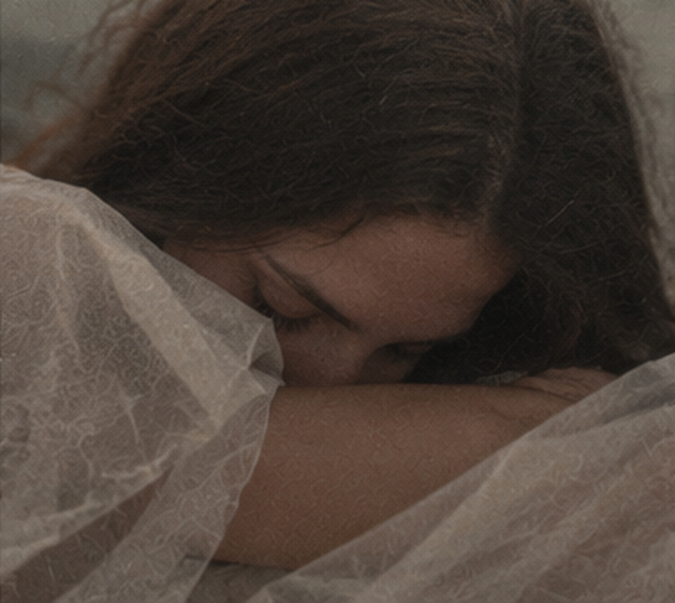
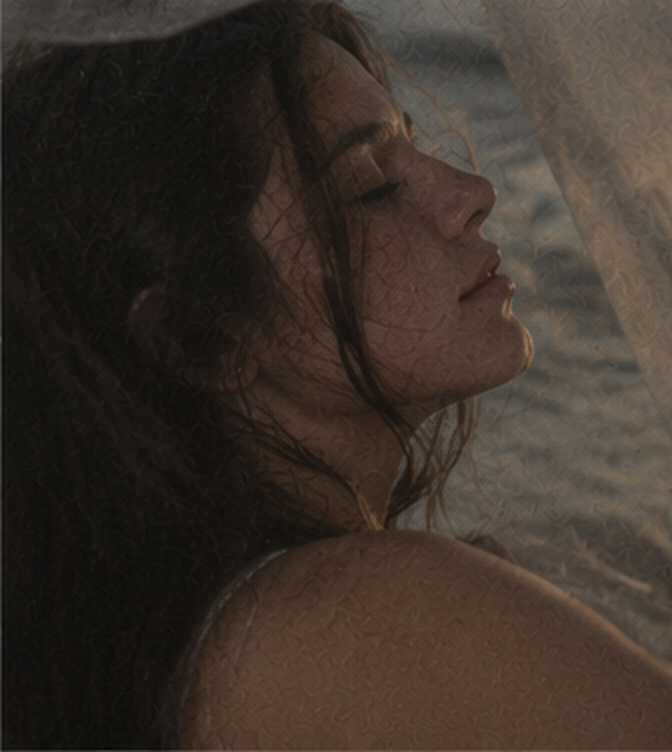
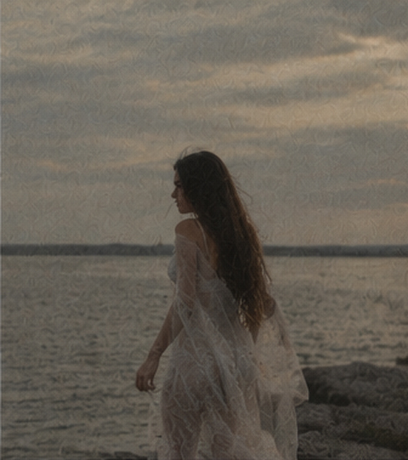
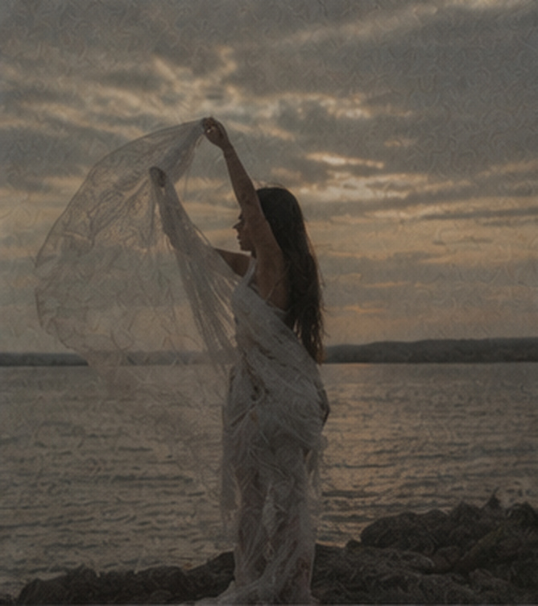
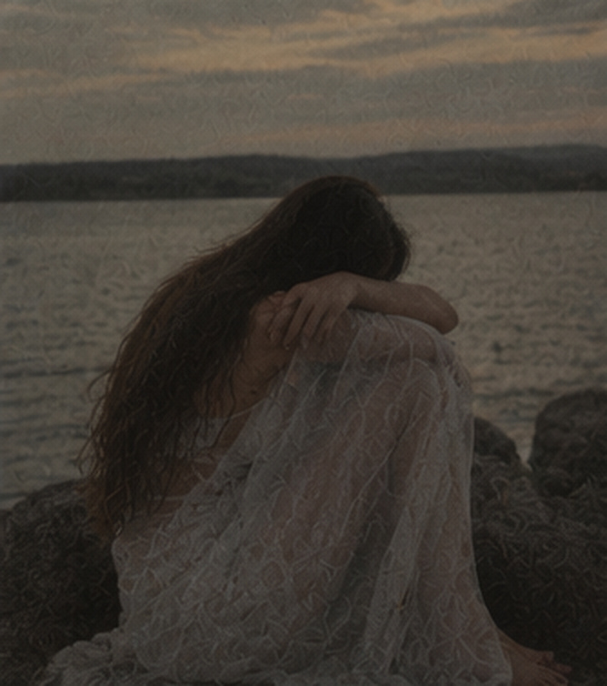
PHOTOGRAPHY – PHOTO SESSION
A poetic exploration of silence, nostalgia, and loneliness.
Download project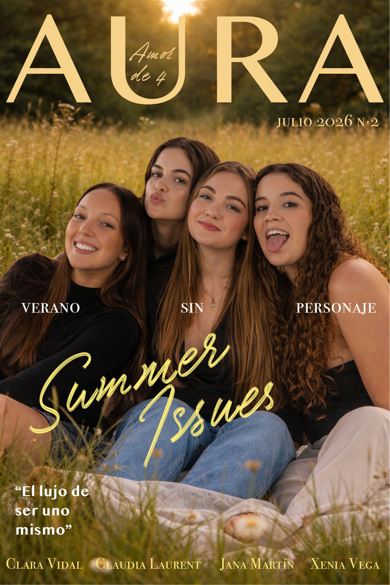
I don't only create and develop my own projects, but also work on commissions, always looking for a way to merge my creative vision with each client's ideas. I believe that the best work comes from finding a connection between both perspectives, which is why I only take on projects I genuinely believe in and feel connected to.